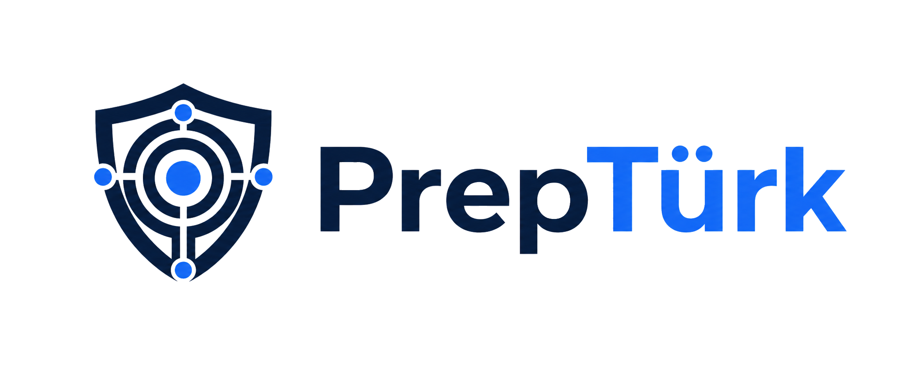
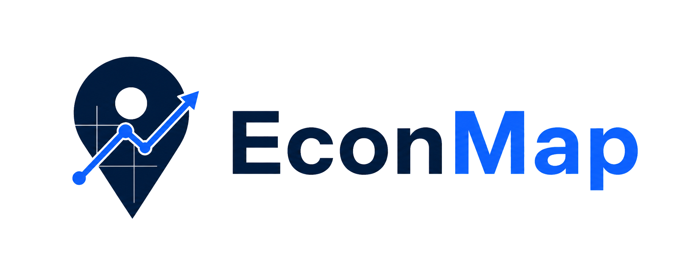
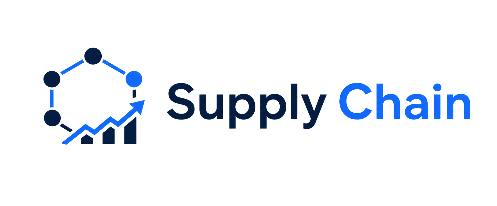
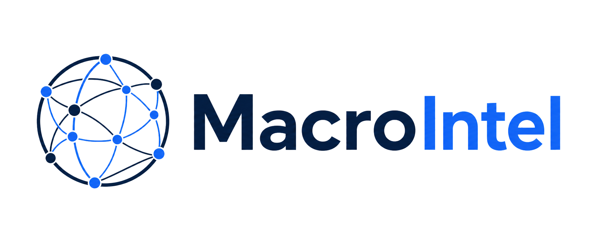
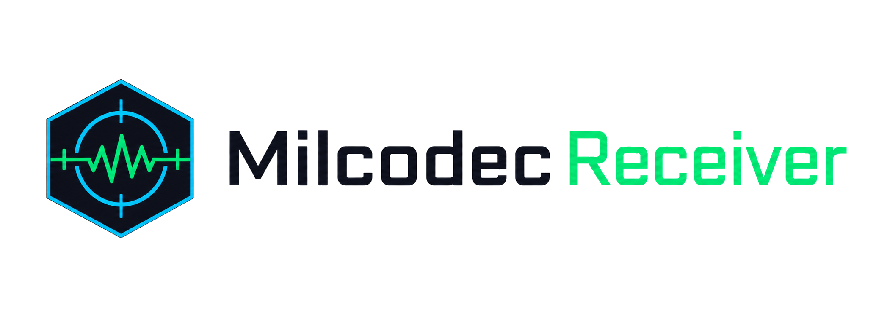
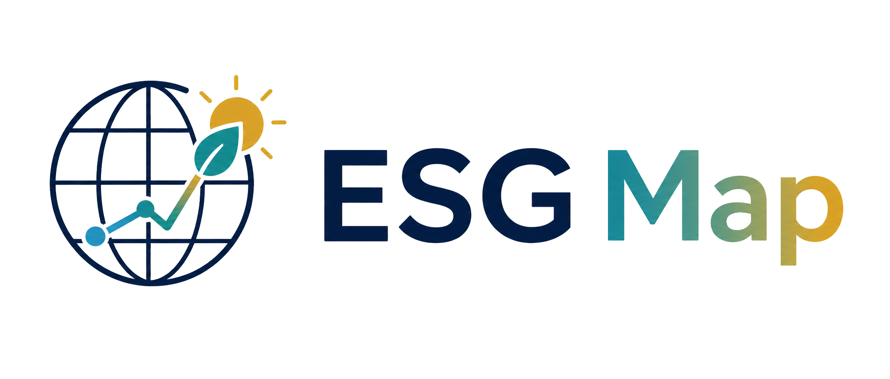

Emergency Intelligence
Preparedness and crisis monitoring for civil resilience workflows.
Operating intelligence systems
Monarch Castle Technologies builds focused tools that turn open information into usable, defensible workflows across emergency response, markets, infrastructure, defense, sustainability, and energy.
Product Lines
Each product owns a narrow operational question and presents a clean reading surface: what is happening, where it matters, and what changed since the last cycle.

Preparedness and crisis monitoring for civil resilience workflows.

Geographic economic signals, market context, and directional readings.

Node, route, and market-cap context for exposed supply networks.
Readable signal panels for market regime and financial conditions.

Trade graph and macro-risk tools for cross-border assessment.

Signal-aware tools for defense-adjacent research and receiver workflows.

Spatial sustainability readings with cividis-style risk-to-opportunity language.
Nuclear policy, infrastructure, and risk context in one operating surface.
Institutional data subsidiary
SDCofA publishes defensible public threat indices with traceable open-source inputs, scheduled collection, and fixed scoring doctrine. It is the institutional data arm behind BNTI, WTI, and MENA.
Method
Ingest lawful open sources and preserve the evidence trail.
Apply stable taxonomies so readings can be compared over time.
Compress complex state into a surface a decision-maker can actually use.
Zero-cost distribution
The public tool bench gives analysts, operators, and founders lightweight ways to score exposure, compare risks, and build a repeatable habit around Monarch Castle systems.
Agent distribution
The first MCP layer is deliberately static: catalog records, starter manifests, and packaging notes that let agent users discover Monarch Castle tools before hosted infrastructure is needed.
Ankara, Turkiye